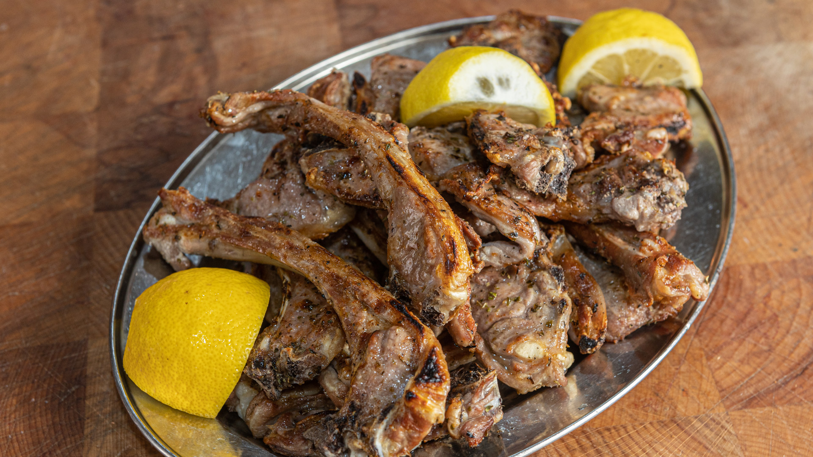
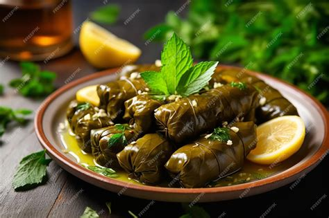
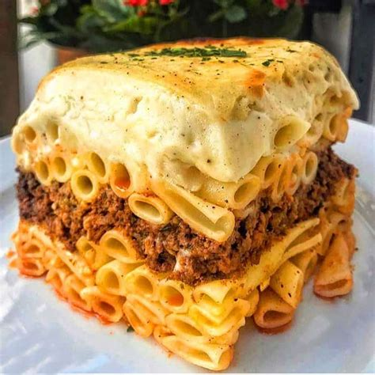
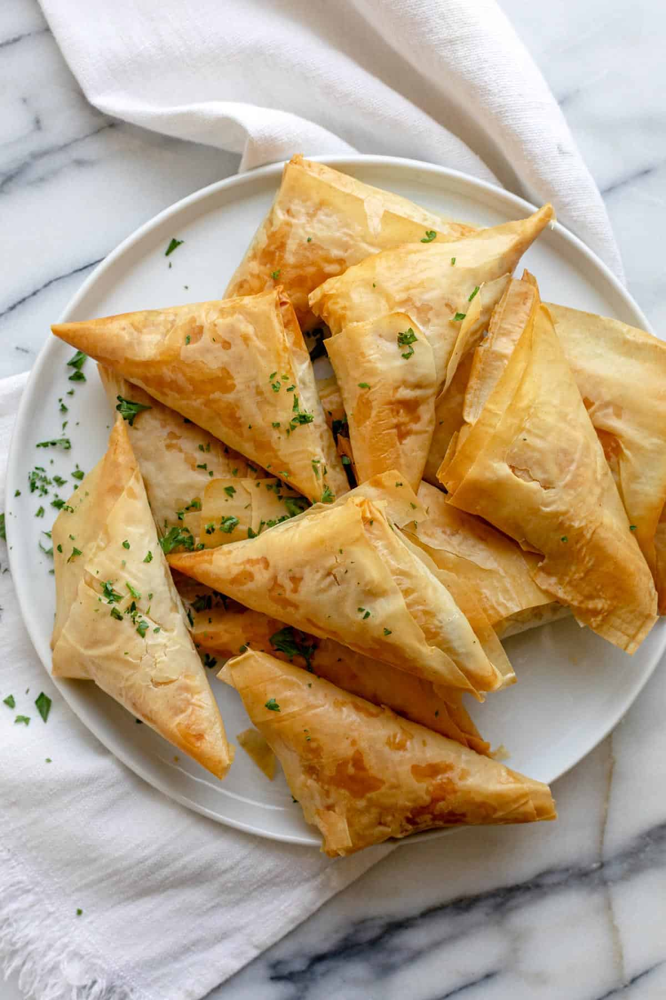
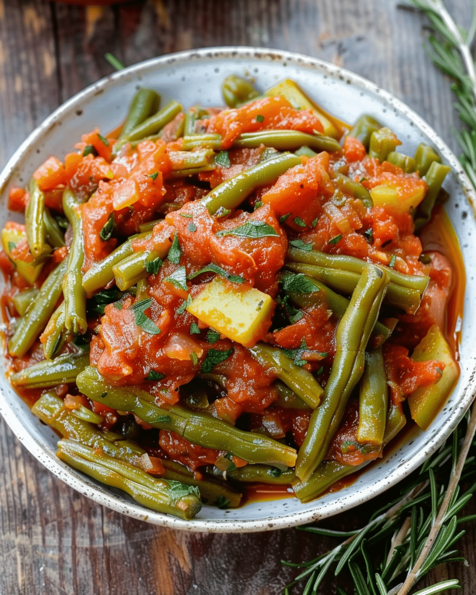
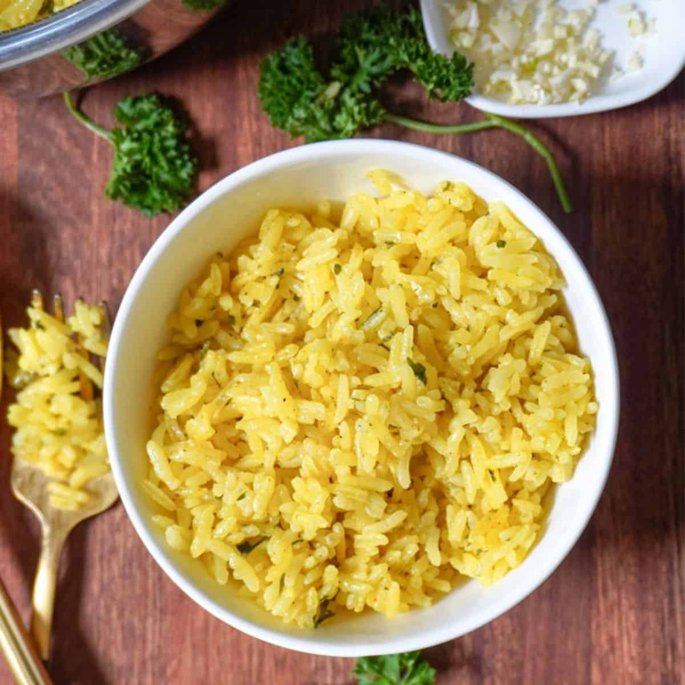
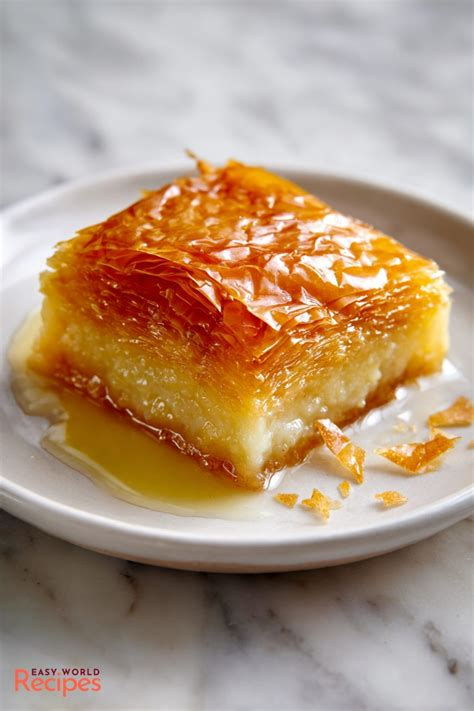
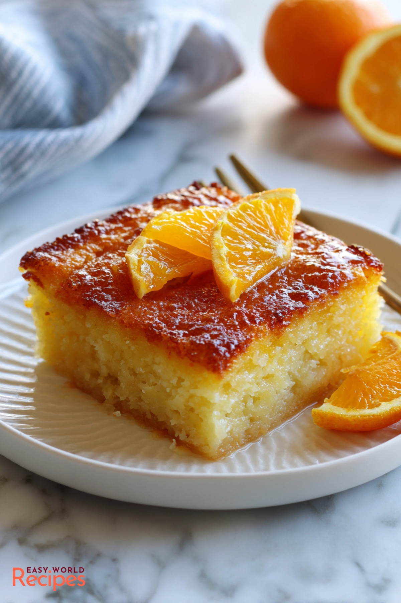
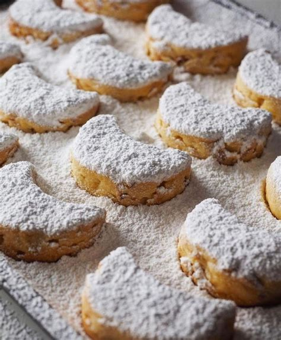
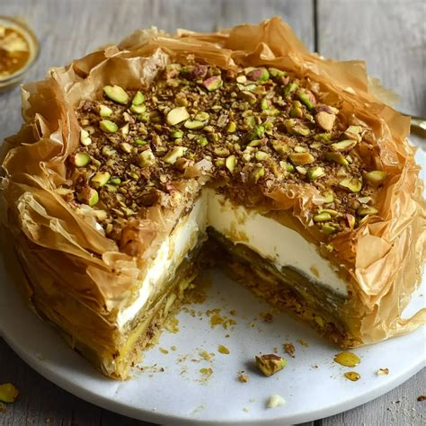

Souvlakia
Skewered marinated pork grilled over charcoal, served with rice
Authentic Greek cuisine prepared with tradition and love
Skewered marinated pork grilled over charcoal, served with rice

Baked chicken with lemon and Greek seasoning, served with rice

Lamb Chops
Hand-cut lamb chops grilled to perfection, served with rice and beans

Pita bread with seasoned gyro meat, fresh vegetables, and creamy tzatziki sauce

Stuffed Grape Leaves
Tender grape leaves stuffed with seasoned beef, rice, and Greek herbs and spices

Greek Baked Pasta
Layered Greek pasta with seasoned ground beef, topped with rich béchamel sauce

Greek Village Salad
Fresh tomatoes, cucumbers, Kalamata olives, peppers, and generous feta cheese
🌿 Vegetarian
Phyllo Pastry Pies
Flaky phyllo pastry filled with spinach & feta (Spanakopita) or savory cheese (Tiropita)
🌿 Vegetarian
Flaming Cheese
Pan-fried Greek cheese, flambéed tableside and served with warm pita. Opa!
🌿 Vegetarian
Green Beans
Green beans slow-cooked in a savory Greek tomato sauce
🌿 Vegetarian
Fluffy seasoned rice, a classic Greek side dish
🌿 Vegetarian
Roasted Greek-style lemon potatoes baked to golden perfection
🌿 Vegetarian
Warm, soft traditional Greek flatbread — perfect alongside any dish
🌿 VegetarianHandmade with care — Greek desserts are a festival tradition

Crispy phyllo layered with chopped walnuts and drenched in honey syrup — a timeless classic

Creamy semolina custard baked in golden phyllo, finished with fragrant syrup

Greek Orange Cake
Moist phyllo and orange cake soaked in sweet citrus syrup

Greek Butter Cookies
Buttery almond shortbread cookies dusted generously in powdered sugar

A delightful fusion — creamy cheesecake with a crispy baklava-style topping and honey drizzle
We offer over a dozen traditional Greek pastries — come discover them all at the festival!
Authentic imported Greek lager
Sample a selection of traditional Greek spirits
The iconic anise-flavored Greek spirit
Traditional Greek white wine with a distinctive resin flavor
Imported wines perfect for the celebration
Light, refreshing hard seltzer
Assorted sodas available
See the full schedule, hours, and how to find us.